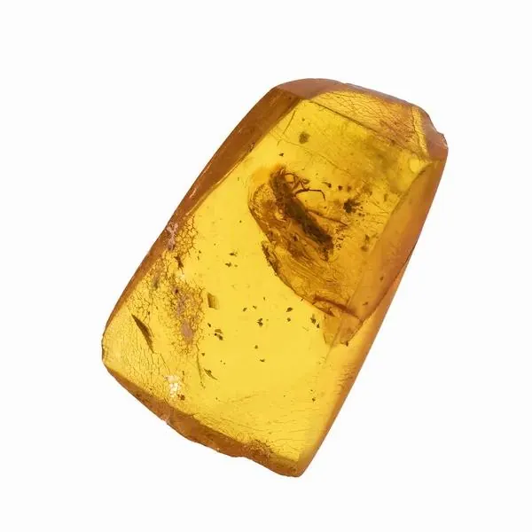

蟲珀與內含物：封存時間的膠囊
一顆蟲珀，就是一枚被樹脂封存的時間膠囊——裡面的蚊子，比人類的歷史老一千萬倍。

核心定義
蟲珀（inclusion amber）指含有昆蟲、植物、氣泡等內含物的琥珀。琥珀本是針葉樹分泌的樹脂，流動時把路過的小生物黏住、包裹，再經數千萬年埋藏石化——於是，一隻蚊子或一片樹葉，成了地球生命史的孤本標本。
蟲珀的學術價值極高：古生物學家從琥珀裡的蚊子體內抽過 DNA（《侏羅紀公園》的靈感來源）、研究過古氣候與古生態——它不只是珠寶，更是一座博物館。
特徵與分類
| 內含物 | 常見類型 | 學術價值 | 市場稀缺度 |
|---|---|---|---|
| 昆蟲 | 蚊、蠓、蟻、蜂、蠅 | 極高 | 高 |
| 植物碎屑 | 樹葉、花瓣、木屑 | 中 | 中 |
| 氣泡 | 圓形/變形氣泡 | 低 | 低 |
| 「水膽」 | 液體包裹體 | 中 | 中高 |
內含物越大、越完整、越稀有（如完整甲蟲、蜥蜴），價值越高——大型脊椎動物內含物（如琥珀中的恐龍尾巴）更是科學界轟動級發現。
科學原理
樹脂變琥珀的過程叫「聚合作用」：樹脂中的萜烯類分子在熱與壓力下緩慢交聯，從黏稠液體變成固體——這個過程需要數百萬到數千萬年。蟲子被黏住後，樹脂繼續分泌覆蓋，形成「內含物」；之後地層抬升、風化出露，人類才得以發現。
琥珀的鑑定關鍵是「密度」：琥珀比重約 1.05–1.10，飽和鹽水中會浮起——這是現場快篩的基礎。蟲珀內含物在放大鏡下應有完整細節；仿品（塑膠/珂巴樹脂）常無真實內含物，或含現代昆蟲。
鑑定與鑑別方法
- 鹽水浮沉：真琥珀在 1:4 鹽水中上浮（小心損壞）
- 紫外燈：琥珀呈藍白螢光，塑膠仿品多無
- 放大鏡：看內含物完整性與自然流動紋
- 熱針測試：真琥珀有松香味，塑膠有刺鼻味（謹慎，會傷品相）
- 警惕珂巴樹脂：比琥珀年輕、酒精可軟化
市場行情與保養建議
行情：普通蟲珀（小型蠓蟲）2026 年市場參考約新台幣數千元；完整蚊子/螞蟻可上萬元；稀有大型內含物（甲蟲、蜘蛛）數萬至數十萬元——內含物完整性與稀有度主導價格。
提醒：蟲珀怕熱怕溶劑，避免酒精與高溫；佩戴與收藏均需輕柔。價格僅供參考，非投資建議。
常見誤區
市場上大量仿品用現代昆蟲+塑膠/珂巴樹脂造假，甚至「注蟲」——用真琥珀加熱後塞入蟲子再封。放大鏡下看細節與自然性。
只有「完整、稀有、大型」的內含物才貴——滿天星般的碎屑或小蠓蟲，其實是蟲珀中的「平民」。
冷知識
1990 年代科學家確實嘗試從琥珀蚊子體內抽取恐龍 DNA——雖然沒有成功，但開啟了「琥珀古 DNA」的研究方向。
2016 年科學家發表了保存在緬甸琥珀中的恐龍尾部標本——羽毛清晰可見，是古生物學的世紀級發現。
反直覺觀點
對學者而言，蟲珀的價值在「古生態資訊」；對收藏家而言，完整的甲蟲或蜘蛛才值錢——一隻普通蚊子，學術意義大於市場價格。
相對於古生代的化石，琥珀大多只有 2000 萬到 1 億年——但在人類時間尺度上，它已經是「永恆」的代名詞。